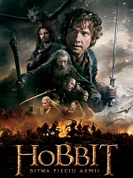

Пол Эджкомб - начальник блока смертников в тюрьме «Холодная гора», каждый из узников которого однажды проходит «зеленую милю» по пути к месту казни. Пол повидал много заключённых и надзирателей за время работы. Однако гигант Джон Коффи, обвинённый в страшном преступлении, стал одним из самых необычных обитателей блока. «Зелёная миля» — мистическая драма по одноимённому роману Стивена Кинга. Премьера состоялась 9 декабря 1999 года. Имеет 4 номинации на «Оскар», 3 премии «Сатурн», ещё 10 наград и 23 номинации.
Пол Эджкомб - начальник блока смертников в тюрьме «Холодная гора», каждый из узников которого однажды проходит «зеленую милю» по пути к месту казни. Пол повидал много заключённых и надзирателей за время работы. Однако гигант Джон Коффи, обвинённый в страшном преступлении, стал одним из самых необычных обитателей блока. «Зелёная миля» — мистическая драма по одноимённому роману Стивена Кинга. Премьера состоялась 9 декабря 1999 года. Имеет 4 номинации на «Оскар», 3 премии «Сатурн», ещё 10 наград и 23 номинации.

Фильм повествует о путешествии Бильбо Бэггинс, который отправляется в большой кампании, цель которой-вернуть потерянное Королевство гномов Эребор злой дракон Смауга. Совершенно неожиданно, хоббит установление контакта маг Гэндальф Серый. Так Бильбо находит себя прихода в компанию тринадцать гномов, которую возглавляет легендарный воин, Торин Дубощитом. Их путь проходит через Край Дикий, через коварные земли, населенные гоблины и орки, смертельно варгами и гигантские пауки, люди смены скинов, и волшебников.
 Приключенческий фильм «Властелин колец: Возвращение Короля» - это заключительная часть трилогии, снятой новозеландским режиссером Питером Джексоном по роману известного английского писателя Дж. Р. Р. Толкина «Властелин колец».
Отважные хоббиты Фродо и Сэм, благодаря невероятной выдержке и выносливости, почти достигли своей цели. В это самое время темный владыка Саурон направляет несметные полчища орков к стенам города королей – Минас-Тирита. В результате грандиозного сражения силам добра снова удается одержать победу в битве.
Приключенческий фильм «Властелин колец: Возвращение Короля» - это заключительная часть трилогии, снятой новозеландским режиссером Питером Джексоном по роману известного английского писателя Дж. Р. Р. Толкина «Властелин колец».
Отважные хоббиты Фродо и Сэм, благодаря невероятной выдержке и выносливости, почти достигли своей цели. В это самое время темный владыка Саурон направляет несметные полчища орков к стенам города королей – Минас-Тирита. В результате грандиозного сражения силам добра снова удается одержать победу в битве.